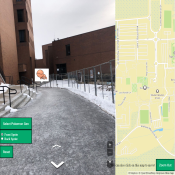

Warping Game

This personal project is a collection of various games that link to each other.
It is inspired by my dream journal- specifically the way I think and what I feel while in long-lasting
dreams.
The games use Unity/C#, PuzzleScript, Flickgame, Lua/PICO-8, and Godot.
Here is a link to the first game: First Game (PuzzleScript).
You can find links to all of the games here.
Poke-API Mapillary Mashup
Inspired by Pokemon Go, this uses street images from Mapillary, Pokemon data from PokeAPI, and Mapbox to
simulate
seeing Pokemon on the street.
Main tasks involved reading documentation, structuring the program to fetch data in the correct
order, and migrating.
New Adventure

This is inspired by the Atari game Adventure. I made it in PixiJS for a web development class.
I figured out how to make different rooms using PIXI.Containers and swapping between them by making them
visible or invisible, and storing map data to them with arrays.
You can play it here.
Asteroids

This is a recreation of the Atari game Asteroids. I made the spritework using Aseprite, and got
better at programming force vectors and debugging in Unity.
Here's a link to download it: Asteroid
Windows Download Link (20 MB)